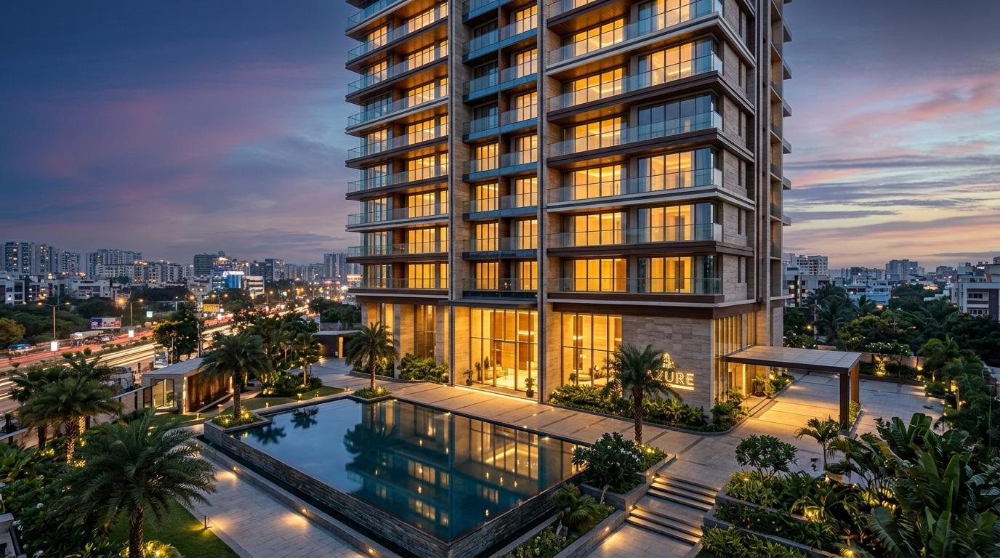

Uttar Pradesh Real Estate & Turnkey Construction Market Report 2026
With infrastructure megaprojects like the Ganga Expressway, Yamuna Expressway, Jewar International Airport, and the Ram Mandir & Kashi Vishwanath spiritual corridors, Uttar Pradesh is experiencing India's fastest real estate appreciation.

Uttar Pradesh is no longer a single property market. It is a set of connected corridors, each with a different demand driver and a different risk profile. The expressway network, the new airports, the defence industrial corridor, the electronics belt near Noida and the metro expansions have changed where people can live and work — and prices have followed those changes unevenly. What follows is a working framework for a buyer who wants a defensible decision rather than a list of hot tips.
1. The structural drivers that actually move prices
Expressways. The Purvanchal, Bundelkhand, Agra–Lucknow and Ganga expressways have compressed travel times between districts that were previously separate markets. Towns within a reasonable drive of an interchange have seen land demand rise; towns bypassed by the corridor have lagged. This is the single clearest pattern in the state: connectivity changes the catchment, and the catchment changes the price.
Airports. Jewar, Ayodhya and Kushinagar have created new employment and tourism catchments. Airport-adjacent land is speculative by nature — the infrastructure is real, but commercial demand takes years to mature. Buy on current access and current demand, not on the render of a terminal that opens in 2030.
Industrial corridors. The defence industrial corridor around Aligarh, Jhansi and Chitrakoot, the electronics manufacturing belt near Noida and Greater Noida, and the logistics clusters along the expressways have created demand for worker housing, warehouses and serviced plots. Industrial demand is stickier than tourism demand because it is tied to employment rather than a festival calendar.
Metro and urban transit. Lucknow, Kanpur, Noida and the NCR belt benefit most. Transit-adjacent residential property typically commands a premium and holds value better in a downturn, because the commute is a permanent feature of the buyer's day rather than a marketing promise.
2. Asset classes and what each one demands from you
Plotted land is the simplest asset to understand and the easiest to get wrong. It produces no income while you hold it, so your return depends entirely on appreciation and your ability to exit. The critical checks are title, land use, layout sanction, road access and RERA registration where applicable. Land in an unapproved layout can sit unsold for years even when the location is right.
Under-construction apartments produce rental income once complete and are easier to finance than land. The risks are delivery delay, specification changes and over-supply in a single corridor. A RERA-registered project with a construction-linked payment plan and a promoter with completed phases is a materially safer bet than a launch-stage project with a time-linked plan.
Ready apartments cost more but remove delivery risk and start earning rent immediately. Check the occupancy certificate, the society's financial health, the age of the plumbing and lifts, and the actual achieved rents in the building rather than the advertised ones.
Commercial and retail property can produce higher yields, but it is less liquid and more sensitive to location and tenant quality. A shop in the wrong lane can stay vacant for a year. Study footfall, parking, permitted use and the anchor tenants nearby before committing.
Warehousing and industrial sheds have become a genuine institutional asset class in the state, driven by e-commerce and manufacturing. They require larger capital, longer leases and a clear understanding of floor loading, clear height and truck access. Smaller investors usually access the segment through funds or fractional platforms rather than direct ownership.
3. What construction actually costs in 2026
If your plan is to buy land and build, the construction rate matters as much as the land rate. Headline per-square-foot numbers are only useful when they are tied to a specification. Our current turnkey packages are:
These are working rates, not quotations. Rocky ground, a high water table, narrow access, heritage-sensitive facades or a commercial kitchen can all push the effective rate higher. Get a site-specific, itemised estimate before you commit to a land purchase, because the build cost frequently decides whether the project works at all. Our turnkey construction page sets out what each package covers.
4. The numbers that decide the deal
Gross rental yield is annual rent divided by the purchase price. In most Uttar Pradesh cities, residential yields sit in a modest band, while commercial and warehousing assets can be higher. A yield that looks unusually high usually signals a risk you have not yet priced — an illegal use, a tenant with no lease, or a building that needs structural work.
Total acquisition cost includes stamp duty, registration, legal fees and brokerage — typically 7–9% on top of the quoted price. Our stamp duty guide breaks the components down.
Holding cost includes maintenance, property tax, insurance and any loan interest. Land has a low holding cost but no income; apartments have a higher holding cost but produce rent. A plot held for eight years with no income needs a larger appreciation to match a let apartment than most buyers assume.
Exit cost and liquidity matter as much as the entry price. A plot in a thin market may take a year to sell even at a fair price. Budget for the possibility that you cannot exit exactly when you want to.
Stress-test before you buy: model the deal at a rent 15% below the agent's estimate, a vacancy of two months a year, and an exit price that is 10% below today's quoted rate. If the investment still makes sense under those assumptions, it is probably a sound purchase. If it only works on the optimistic case, it is a speculation.
5. Tax treatment, in brief
Rental income is taxed as income from house property, with standard deductions available. Capital gains depend on the holding period: long-term gains on property acquired after July 2024 are generally taxed at 12.5% without indexation, while properties acquired earlier may have the option of the older 20% with indexation regime, subject to conditions. TDS applies on purchases above the threshold, and stamp duty is not deductible as a capital loss. Tax rules change, so confirm your specific situation with a chartered accountant before structuring a purchase.
6. Where the opportunity actually is
The strongest risk-adjusted opportunities in 2026 are usually not in the most talked-about location. They are in corridors where infrastructure is funded and under construction, prices have not yet priced in completion, and end-user demand exists independently of investor demand. A district with a new expressway interchange, an operating industrial estate and a functioning hospital will outperform a district with a render and a press release.
Our city pages for Lucknow, Varanasi, Prayagraj and Ayodhya go into locality-level detail for each market, including the approval authorities and the micro-markets worth inspecting.
7. Risks to price in
- Speculative pricing. Land prices in newly announced corridors often run ahead of actual demand. Buy on current access, not on a proposed road.
- Title and land-use defects. Agricultural land, unapproved layouts and undivided ancestral property are common in tier-two markets, and they are slow and expensive to fix.
- Delivery risk. Check the promoter's completed projects and the RERA compliance history, not just the current brochure.
- Concentration. A single project or a single corridor is a concentrated bet. Diversifying across locations reduces the impact of one market stalling.
- Liquidity. Property is illiquid. Keep enough cash outside the investment to cover emergencies without a forced sale.
- Cost escalation. Construction and material costs move. A project budgeted without a contingency of at least 10% is likely to stall halfway.
8. A due-diligence sequence that works
Start with the location and the demand driver, not the property. Confirm the infrastructure is funded and scheduled, not merely announced. Then verify title and approvals. Then test the numbers against conservative rent and exit assumptions. Then negotiate. Most bad property decisions are made in the reverse order — an attractive brochure first, and the due diligence afterwards.
Keep a written record of every document you have seen, every payment you have made, and every assurance you have been given. If the seller or promoter is unwilling to put something in writing, treat that as information about the transaction rather than an inconvenience to work around.
Need a Turnkey Building Estimate or Site Visit in UP?
Prakhar India provides free structural audits, architectural 3D floor maps, and itemized construction quotes across all UP cities.
📞 Call Expert Engineer (+91 90444 99111)